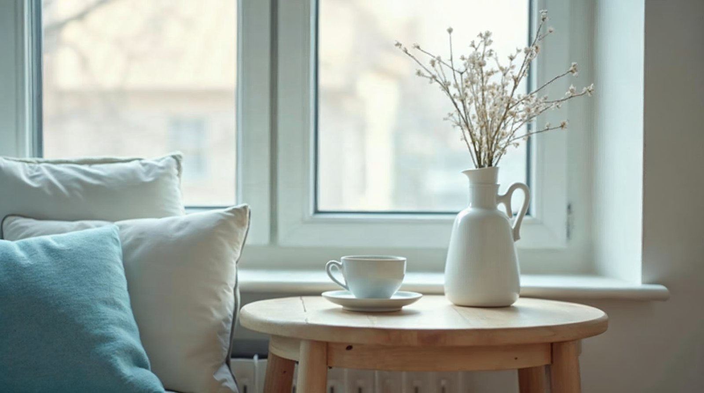
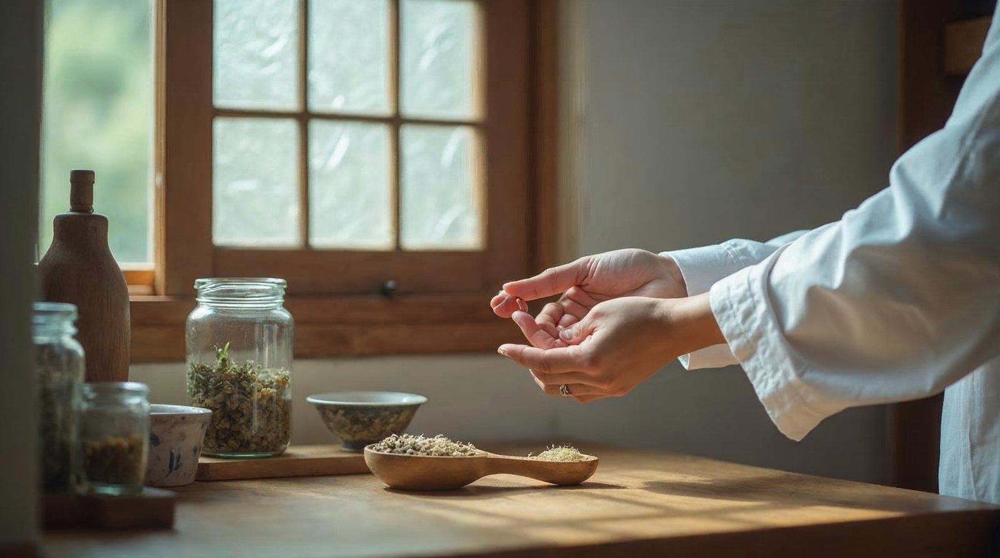
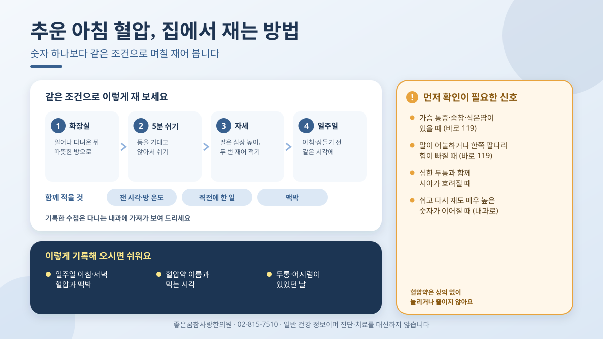

이종호 한의사 감수좋은꿈참사랑한의원 대표원장 (한의사 면허번호 19769)발행 2026-11-25 · 수정 2026-11-26
이 글의 차례
- 왜 겨울 아침에는 혈압이 높게 재어질 수 있나요
- 진료실 혈압과 집 혈압은 왜 다를까요?
- 스스로 점검해 보는 목록
- 먼저 이렇게 여쭙니다
- 집에서는 어떤 순서로 재면 좋을까요?
- 띠는 어떻게 감아야 할까요?
- 처음 일주일은 어떻게 시작하면 좋을까요?
- 일상에서 먼저 해 볼 수 있는 것
- 겨울 아침 방은 어떻게 준비하면 좋을까요?
- 기록은 어떻게 남기면 좋을까요?
- 혈압약을 드신다면 무엇을 지켜야 하나요?
- 새벽 운동과 외출은 어떻게 조절할까요?
- 짠 국물과 술은 어떻게 하나요?
- 체중과 허리둘레도 함께 볼까요?
- 화장실과 목욕은 어떻게 하면 좋을까요?
- 혈압계는 어떻게 고르고 관리하나요?
- 숫자를 볼 때마다 불안해진다면요?
- 뒷목이 뻣뻣하면 혈압 때문일까요?
- 잠은 혈압과 어떤 관계가 있나요?
- 부모님 혈압을 대신 재 드릴 때는 무엇을 챙기나요?
- 한의원에서 함께 살필 수 있는 경우
- 이렇게 기록해 오시면 상담이 쉬워집니다
- 이런 증상은 먼저 확인이 필요합니다
추운 아침 혈압이 걱정된다면, 숫자 하나에 놀라기보다 같은 조건에서 며칠 재어 흐름을 보는 것이 먼저입니다. 겨울에 일어나자마자 차가운 방에서 재면 평소보다 높게 나올 수 있습니다. 예를 들어 새벽 운동을 나가기 전 찬 거실에서 재고 숫자에 깜짝 놀라는 경우가 있습니다.
혈압계를 처음 장만한 분들은 숫자가 나올 때마다 마음이 오르락내리락합니다. 어제는 괜찮았는데 오늘은 왜 높은지, 두 번 쟀더니 왜 숫자가 다른지 궁금해하며 하루에도 여러 번 재 보시곤 합니다.
혈압은 원래 하루 중에도 계속 움직이는 숫자입니다. 그래서 저는 숫자 하나하나보다, 같은 조건에서 잰 숫자들이 어떤 흐름을 그리는지를 함께 보자고 말씀드립니다. 재는 방법을 정리하면 걱정도 함께 정리됩니다. 숫자에 휘둘리기보다 숫자를 내 편으로 쓰는 방법을 이 글에서 하나씩 정리해 보겠습니다.
왜 겨울 아침에는 혈압이 높게 재어질 수 있나요
- 추우면 몸이 열을 지키려 하면서 혈압이 오르는 경향이 있다고 알려져 있습니다.
- 일어난 직후에는 몸이 깨어나며 혈압이 달라질 수 있습니다.
- 화장실을 참거나 서둘러 움직인 직후에 재면 높게 나올 수 있습니다.
- 재는 자세와 팔 높이에 따라 숫자가 달라집니다.
따뜻한 이불 속에서 나와 찬 거실로 걸어 나가는 순간, 몸은 열을 빼앗기지 않으려고 피부 가까운 혈관을 좁힙니다. 그 직후에 재면 평소보다 높은 숫자가 나오기 쉽습니다.
긴장도 숫자에 영향을 줍니다. "오늘은 얼마나 나올까" 걱정하며 재면 그 마음이 숫자에 실리기도 합니다. 재기 전에 몇 분 앉아 숨을 고르라고 하는 이유가 여기에 있습니다.
진료실 혈압과 집 혈압은 왜 다를까요?
병원에 가면 긴장해서 집에서보다 높게 나온다는 분이 있고, 반대로 병원에서는 괜찮은데 집에서 더 높다는 분도 있습니다. 어느 한쪽만으로는 내 혈압을 다 알기 어렵습니다.
그래서 집에서 일정한 조건으로 잰 기록이 중요합니다. 일주일 동안 아침과 저녁에 잰 숫자를 모아 다니는 내과에 가져가면, 진료실에서 잰 한 번의 숫자보다 훨씬 많은 것을 알려 줍니다.
집에서 잰 숫자가 진료실과 많이 다르다면, 혈압계를 들고 내과에 가서 진료실 혈압계와 함께 재어 비교해 보는 것도 방법입니다.
스스로 점검해 보는 목록
- 혈압을 재는 시각이 날마다 다르다
- 일어나자마자 침대나 찬 거실에서 바로 잰다
- 소매를 걷어 올려 팔이 조이는 상태로 잰다
- 재는 동안 이야기를 하거나 휴대전화를 본다
- 한 번 재고 숫자가 마음에 들지 않으면 여러 번 다시 잰다
- 기록하지 않고 숫자를 보고 넘어간다
- 혈압약 먹는 시각이 들쭉날쭉하다
해당하는 항목이 많을수록 재는 방법부터 정리해 보시길 권합니다. 이 목록은 진단이 아니라 재는 습관을 돌아보는 도구로 써 주세요. 표시한 항목을 하나씩 고쳐 가다 보면, 같은 혈압계로도 훨씬 읽기 쉬운 기록이 쌓입니다.

먼저 이렇게 여쭙니다
- 혈압을 하루 중 언제, 어떤 자세로 재시나요?
- 높게 나온 숫자가 어느 정도였고 며칠이나 이어졌나요?
- 혈압약을 드시나요? 드신다면 몇 시에 드시나요?
- 두통이나 어지럼, 가슴 답답함이 함께 있었나요?
- 새벽에 바깥 운동을 나가시나요?
집에서는 어떤 순서로 재면 좋을까요?
아침에는 일어나서 한 시간 안에, 화장실을 다녀온 뒤, 아침 식사와 약을 먹기 전에 잽니다. 저녁에는 잠들기 전에 잽니다. 매일 비슷한 시각을 지키는 것이 숫자보다 중요합니다.
등받이가 있는 의자에 앉아 등을 기대고, 다리를 꼬지 않고 발바닥을 바닥에 붙입니다. 팔은 탁자 위에 올려 위팔에 감은 띠가 심장 높이에 오도록 하고, 쿠션이나 접은 수건으로 높이를 맞춥니다.
그 자세로 1~2분 간격을 두고 두 번 재고, 두 숫자를 모두 적습니다. 처음 숫자가 높게 나왔다고 여러 번 다시 재며 마음에 드는 숫자를 고르지는 마세요. 두 숫자 차이가 크게 난다면 한 번 더 재어 세 번 모두 적어 두시면 됩니다.
띠는 어떻게 감아야 할까요?
두꺼운 옷 위에 감거나 소매를 걷어 올려 팔이 조인 상태로 재면 숫자가 달라질 수 있습니다. 얇은 옷 한 겹 위에 감거나 맨살에 감는 것을 권합니다.
띠의 아래쪽 끝이 팔꿈치 접히는 곳에서 손가락 두 개쯤 위에 오도록 감고, 손가락 하나가 들어갈 정도로 감아 주세요. 팔이 굵거나 가는 분은 띠 크기가 맞는지 확인이 필요합니다.
재는 동안에는 말하지 말고, 팔에 힘을 빼고 가만히 있어 주세요. 휴대전화를 보거나 텔레비전 뉴스에 신경을 쓰면 숫자가 흔들릴 수 있습니다.
처음 일주일은 어떻게 시작하면 좋을까요?
첫날에는 혈압계 옆에 기록장과 펜을 두고, 재는 의자와 탁자 자리를 정합니다. 자리를 정해 두면 매일 같은 자세로 재기 쉬워집니다.
일주일 동안은 숫자를 해석하려 하지 말고 그냥 적기만 하세요. 일주일이 다 차면 그때 아침과 저녁 숫자를 모아 보고, 기록장을 내과에 가져가 의사와 함께 읽어 보시면 됩니다. 처음부터 완벽하게 하려 하기보다 매일 같은 때에 재는 습관을 만드는 것이 첫 목표입니다.
일상에서 먼저 해 볼 수 있는 것
- 일어나 화장실을 다녀온 뒤 따뜻한 방에서 5분 앉아 쉬고 재기
- 등을 기대고 팔을 심장 높이에 올린 자세로 두 번 재어 적기
- 아침과 잠들기 전, 같은 시각에 일주일 재기
- 새벽 운동은 해가 뜬 뒤로 늦추고 모자와 목도리 챙기기
- 기록한 수첩을 다니는 내과에 가져가 보여 드리기
겨울 아침 방은 어떻게 준비하면 좋을까요?
혈압을 재는 방이 너무 차갑지 않도록, 잠들기 전 난방 예약을 걸어 두거나 재는 자리 가까이에 작은 난로를 두는 것도 방법입니다. 방 온도를 함께 적어 두면 숫자의 흐름을 읽는 데 도움이 됩니다.
이불 밖으로 나오기 전에 이불 속에서 손발을 몇 번 움직이고, 천천히 일어나 앉았다가 일어서세요. 갑자기 벌떡 일어나 찬 바닥을 걸어가는 것보다 몸이 덜 놀랍니다.
화장실과 욕실이 특히 차가운 집이라면 실내화와 얇은 겉옷을 침대 옆에 두고, 일어나자마자 걸쳐 입고 움직여 주세요.
기록은 어떻게 남기면 좋을까요?
수첩이든 휴대전화 메모든 괜찮습니다. 날짜, 시각, 두 번 잰 위아래 숫자와 맥박, 방 온도, 직전에 한 일을 한 줄로 적습니다. 혈압계에 기록 기능이 있어도 직접 적어 두면 흐름이 눈에 더 잘 들어옵니다.
일주일이 지나면 아침 숫자끼리, 저녁 숫자끼리 모아 대략적인 범위를 보세요. 하루 이틀 튀는 숫자보다 일주일 전체가 어느 쪽으로 기우는지가 중요합니다.
잠을 설친 날, 술을 마신 다음 날, 감기에 걸린 날처럼 특별한 일이 있었던 날은 옆에 짧게 표시해 두세요. 숫자가 높았던 이유를 나중에 짐작하는 데 도움이 됩니다.
혈압약을 드신다면 무엇을 지켜야 하나요?
아침에 재는 혈압은 약을 먹기 전에 재는 것이 일반적입니다. 재고 나서 약을 드시고, 약 먹은 시각도 기록에 함께 적어 주세요.
숫자가 높게 나왔다고 약을 한 알 더 먹거나, 낮게 나왔다고 건너뛰지 마세요. 약의 양과 시각은 처방한 의사와 상의해서 정하는 것입니다. 기록이 쌓이면 그 상의가 훨씬 구체적이 됩니다.
여러 병원에서 약을 받는다면 약 목록을 한 장에 정리해 두세요. 진료를 받을 때마다 그 목록을 보여 드리면 약이 겹치는 일을 줄일 수 있습니다.
새벽 운동과 외출은 어떻게 조절할까요?
겨울 새벽은 하루 중 가장 춥고, 몸이 막 깨어나는 때입니다. 새벽 운동을 오래 해 온 분이라도 겨울에는 해가 뜬 뒤로 시간을 늦추거나, 실내 운동으로 바꿔 보시길 권합니다.
밖에 나갈 때는 모자, 목도리, 장갑으로 머리와 목, 손을 덮어 주세요. 처음 십 분은 천천히 걸으며 몸을 데우고, 숨이 가쁘지 않은 정도로 운동 강도를 정합니다.
짠 국물과 술은 어떻게 하나요?
겨울에는 뜨끈한 국물 요리를 자주 먹게 됩니다. 국물에는 소금이 많이 녹아 있어, 건더기 위주로 드시고 국물은 반쯤 남기는 습관을 들여 보세요. 김치와 젓갈도 양을 조금씩 줄여 보세요.
연말 모임에서 술을 마신 다음 날 아침에는 혈압이 평소와 다르게 나올 수 있습니다. 그날 숫자 옆에 술을 마셨다고 표시해 두고, 술자리는 잔 수를 미리 정해 두는 것이 좋습니다.
체중과 허리둘레도 함께 볼까요?
혈압 기록과 함께 한 달에 한 번 같은 날 아침에 체중과 허리둘레를 재어 적어 두면, 생활의 변화가 숫자로 함께 보입니다. 겨울에는 움직임이 줄고 먹는 양이 늘어 허리둘레가 조금씩 느는 분이 많습니다.
허리둘레는 숨을 편하게 내쉰 상태에서 배꼽 높이를 줄자로 재면 됩니다. 매번 같은 자리, 같은 시각에 재야 비교가 됩니다. 숫자가 늘고 있다면 식사와 움직임을 함께 돌아볼 때입니다.
화장실과 목욕은 어떻게 하면 좋을까요?
추운 겨울 아침 화장실에서 오래 힘을 주면 몸에 부담이 될 수 있습니다. 물을 충분히 마시고 채소를 챙겨 변이 딱딱해지지 않도록 하는 것도 겨울 아침을 편하게 보내는 방법입니다.
목욕은 너무 뜨거운 물에 오래 들어가 있기보다 미지근하고 따뜻한 물로 짧게 하세요. 욕실을 미리 데워 두고, 나와서는 바로 물기를 닦고 옷을 입어 몸이 갑자기 식지 않도록 해 주세요.
혈압계는 어떻게 고르고 관리하나요?
집에서 쓰는 혈압계는 위팔에 띠를 감는 방식이 많이 권해집니다. 내 팔 둘레에 맞는 띠 크기인지, 숫자가 크게 잘 보이는지, 기록이 남는지를 함께 살펴 고르시면 됩니다.
오래 쓴 혈압계는 숫자가 조금씩 어긋날 수 있습니다. 일 년에 한 번쯤 다니는 내과에 들고 가 진료실 혈압계와 함께 재어 비교해 보세요. 차이가 크다면 교체를 생각해 볼 때입니다.
건전지가 약하면 숫자가 이상하게 나오기도 합니다. 갑자기 평소와 많이 다른 숫자가 나오면 건전지를 먼저 확인하고, 띠에 구멍이나 꺾인 곳이 없는지도 살펴 주세요.
숫자를 볼 때마다 불안해진다면요?
혈압계를 산 뒤로 오히려 마음이 더 불편해졌다는 분도 있습니다. 하루에 열 번 넘게 재며 숫자에 따라 기분이 오르내린다면, 재는 횟수를 아침과 저녁 두 번으로 정해 두는 것이 도움이 됩니다.
정해진 때가 아닌데 불안해서 혈압계에 손이 간다면, 먼저 따뜻한 물을 한 잔 마시고 창밖을 보며 숨을 길게 세 번 내쉬어 보세요. 불안한 마음으로 잰 숫자는 그 마음까지 담겨 높게 나오기 쉽습니다.
기록은 걱정을 키우기 위한 것이 아니라 의사와 이야기를 나누기 위한 자료입니다. 그렇게 생각하면 숫자를 조금 덜 무겁게 볼 수 있습니다.
뒷목이 뻣뻣하면 혈압 때문일까요?
뒷목이 뻣뻣하고 머리가 무거우면 혈압부터 떠올리는 분이 많습니다. 그런데 추위에 어깨를 움츠리고 오래 화면을 본 날에도 뒷목은 충분히 뻣뻣해집니다.
뒷목이 불편한 날 혈압을 재 보고, 그날 숫자와 목의 느낌을 함께 적어 보세요. 몇 번 모아 보면 목이 뻣뻣한 날마다 숫자가 높은지, 아니면 상관없이 오가는지가 보입니다. 그 기록이 원인을 짐작하는 데 도움이 됩니다.
잠은 혈압과 어떤 관계가 있나요?
잠을 설친 다음 날 아침에는 혈압이 평소보다 높게 나온다는 분이 적지 않습니다. 밤에 자주 깨거나 코골이가 심하다는 말을 듣는다면, 그 이야기도 기록에 함께 적어 주세요.
잠드는 시각과 일어나는 시각을 일정하게 맞추고, 잠들기 전에는 따뜻하게 씻고 화면을 멀리하는 것부터 시작해 보세요. 잠이 정리되면 아침 숫자를 읽기도 한결 쉬워집니다.
부모님 혈압을 대신 재 드릴 때는 무엇을 챙기나요?
부모님 댁에 들렀을 때 혈압을 재 드리는 분도 많습니다. 이때도 같은 원칙입니다. 오시자마자 바로 재지 말고, 따뜻한 방에서 5분쯤 앉아 쉬신 뒤 재어 주세요.
부모님이 혼자서도 잴 수 있도록 재는 순서를 큰 글씨로 적어 혈압계 옆에 붙여 두면 좋습니다. 기록장도 칸을 미리 그려 드리면 적기 쉬워하십니다.

한의원에서 함께 살필 수 있는 경우
- 혈압이 걱정되어 생활을 정리하고 싶은 경우 잠과 식사, 긴장의 흐름을 함께 살핍니다.
- 뒷목이 뻣뻣하고 머리가 무거운 경우 목과 어깨의 긴장을 함께 살핍니다.
- 체중과 허리둘레가 늘어 걱정되는 경우 필요하다고 판단될 때 체성분을 함께 확인합니다.
좋은꿈참사랑한의원에서는 맥부터 짚으며 식사와 잠, 활동의 흐름을 여쭙고, 필요하다고 판단될 때 인바디 770으로 체성분을, 당화혈색소 검사기로 혈당의 흐름을 확인합니다. 귀가 전에는 집에서 지켜볼 점과 다음에 확인할 일을 알려 드립니다.
진단과 약 조절은 내과에서 받으시도록 안내합니다. 드시는 혈압약은 처방한 의사와 상의 없이 줄이거나 끊지 마세요.
처음 오실 때 집에서 적은 혈압 기록과 약 목록을 가져와 주시면, 잠과 식사, 긴장의 흐름과 함께 놓고 이야기를 나눌 수 있습니다. 한약 상담을 하게 되면 드시는 약을 먼저 확인합니다.
이렇게 기록해 오시면 상담이 쉬워집니다
- 일주일 동안 아침·저녁 혈압과 맥박
- 잰 시각과 방의 온도, 직전에 한 일
- 복용 중인 혈압약 이름과 먹는 시각
- 두통이나 어지럼이 있었던 날
여기에 그날 잠든 시각과 깬 시각을 한 줄 덧붙여 보세요. 잠을 설친 다음 날 아침 숫자가 어떻게 달라지는지 보이면, 잠을 챙기는 일이 혈압 관리와 이어져 있다는 것을 스스로 확인하게 됩니다.
이런 증상은 먼저 확인이 필요합니다
- 가슴 통증이나 숨참이 있거나, 혈압이 매우 높게 나오면서 머리가 심하게 아픈 경우
- 말이 어눌해지거나 한쪽 팔다리에 힘이 빠지는 경우
이런 신호가 있으면 한의원보다 가까운 병원이나 응급실을 먼저 찾으세요.

여쭙는 것
- 혈압을 하루 중 언제, 어떤 자세로 재시나요?
- 높게 나온 숫자가 어느 정도였고 며칠이나 이어졌나요?
- 혈압약을 드시나요? 드신다면 몇 시에 드시나요?
생활에서 해 볼 것
- 일어나 화장실을 다녀온 뒤 따뜻한 방에서 5분 앉아 쉬고 재기
- 등을 기대고 팔을 심장 높이에 올린 자세로 두 번 재어 적기
- 아침과 잠들기 전, 같은 시각에 일주일 재기
한의원에서 함께 살필 것
- 혈압이 걱정되어 생활을 정리하고 싶은 경우 잠과 식사, 긴장의 흐름을 함께 살핍니다.
- 뒷목이 뻣뻣하고 머리가 무거운 경우 목과 어깨의 긴장을 함께 살핍니다.
- 체중과 허리둘레가 늘어 걱정되는 경우 필요하다고 판단될 때 체성분을 함께 확인합니다.
먼저 확인이 필요한 신호
- 가슴 통증이나 숨참이 있거나, 혈압이 매우 높게 나오면서 머리가 심하게 아픈 경우
- 말이 어눌해지거나 한쪽 팔다리에 힘이 빠지는 경우
한눈에 보는 표
| 구분 | 핵심 |
|---|---|
| 여쭙는 것 | 혈압을 하루 중 언제, 어떤 자세로 재시나요? 높게 나온 숫자가 어느 정도였고 며칠이나 이어졌나요? |
| 생활에서 해 볼 것 | 일어나 화장실을 다녀온 뒤 따뜻한 방에서 5분 앉아 쉬고 재기 등을 기대고 팔을 심장 높이에 올린 자세로 두 번 재어 적기 |
| 한의원에서 함께 살필 것 | 혈압이 걱정되어 생활을 정리하고 싶은 경우 잠과 식사, 긴장의 흐름을 함께 살핍니다. 뒷목이 뻣뻣하고 머리가 무거운 경우 목과 어깨의 긴장을 함께 살핍니다. |
| 먼저 확인이 필요한 신호 | 가슴 통증이나 숨참이 있거나, 혈압이 매우 높게 나오면서 머리가 심하게 아픈 경우 말이 어눌해지거나 한쪽 팔다리에 힘이 빠지는 경우 |
자주 묻는 질문
한 번 높게 나오면 약을 더 먹어야 하나요?
임의로 약을 늘리거나 줄이지 마세요. 며칠 기록을 가지고 처방한 의사와 상의하는 것이 안전합니다.
손목 혈압계도 괜찮나요?
재는 높이에 따라 차이가 날 수 있어 위팔에 감는 방식을 권하는 경우가 많습니다. 쓰는 기기는 다니는 내과에서 확인받아 보세요.
한의원에서도 혈압을 보나요?
상담 때 기록을 함께 보고 생활의 흐름을 살핍니다. 고혈압의 진단과 약 조절은 내과에서 받으시도록 안내합니다.
겨울에는 운동을 쉬어야 하나요?
쉬기보다 시간과 장소를 바꾸는 쪽을 권합니다. 따뜻한 낮 시간이나 실내에서 가볍게 이어 가세요.
좋은꿈참사랑한의원은 재진 때 지난번 이야기부터 이어서 여쭙니다. 진료시간과 예약은 오시는 길에서 확인하세요.
어디서 상담받을 수 있나요?
좋은꿈참사랑한의원은 서울 동작구 만양로2길 2 신성빌딩 3층·5층(서울 동작구 상도동, 7호선 상도역 3번 출구 근처)에 있습니다. 한의사 3명(이종호 대표원장, 조영기 수석진료원장, 정원영 진료원장)이 진료합니다. 진료시간은 평일 09:30~20:00(점심 13:00~14:00), 토·일·공휴일 09:30~15:00이며, 방문 전 전화로 확인을 권합니다. 예약은 네이버 예약, 카카오톡 상담, 전화 02-815-7510로 받습니다.
이 글은 일반적인 건강 정보이며 개인의 진단이나 치료를 대신하지 않습니다. 증상이 있거나 복용 중인 약이 있다면 진료를 통해 확인하세요. 치료 효과는 개인마다 다를 수 있습니다.
작성 기준: 일반적으로 알려져 있는 건강 정보를 참고해 정리했습니다(대표원장 감수). 증상 기록은 1~2주 동안 하루 1회, 비슷한 시간에 적어 오시면 지난 상태와 비교하기 쉽습니다.